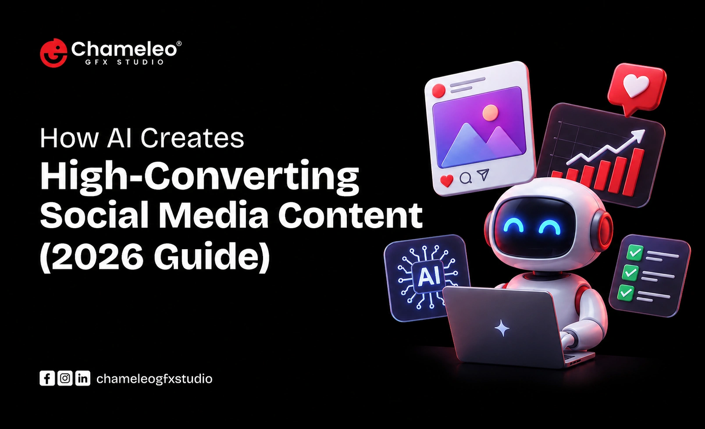

How AI Creates High-Converting Social Media Content (2026 Guide)

Introduction
Most brands post content every single day and still watch their engagement crawl along at the same flat line. You've probably felt this. You spend an hour crafting a caption, pick the "perfect" image, hit publish, and get twelve likes from your own team.
Here's the uncomfortable truth: the problem was never your creativity. It was your process.
Social media used to reward whoever posted the most. Now it rewards whoever understands the algorithm, the audience psychology, and the exact hook that stops a thumb mid-scroll, all at once. That's a lot for one marketer to hold in their head, which is exactly why AI has quietly become the most valuable teammate on modern content teams.
AI creates high-converting social media content by combining data analysis, pattern recognition, and rapid testing at a scale no human team can match manually. It studies what's already working, predicts what will resonate with a specific audience, and generates variations fast enough to let brands test their way to the winning post instead of guessing their way there.
In this guide, you'll learn exactly how AI does this, the tools driving results right now, and a practical framework you can start using today, whether you're a solo creator or running content for an entire agency.
Table of Contents
- Why Traditional Social Media Content Falls Short
- What Makes Content "High-Converting" in 2026
- How AI Actually Builds High-Converting Content
- AI vs. Traditional Content Creation: A Direct Comparison
- Best AI Tools for Social Media Content (By Function)
- A Practical Framework: The 5-Step AI Content System
- Common Mistakes Brands Make With AI Content
- Common Misconceptions About AI-Generated Content
- FAQs
Why Traditional Social Media Content Falls Short
Traditional content creation runs on instinct. A marketer decides what "feels right," publishes it, and waits days or weeks to see if it worked.
That approach has three built-in problems:
- It's slow. By the time you learn a post underperformed, the trend it was riding has already passed.
- It's subjective. What a creative director loves and what an audience actually engages with are often two different things.
- It doesn't scale. One person can only write so many captions, test so many hooks, and analyze so much data before burning out.
AI removes the guesswork by replacing "I think this will work" with "here's what the data says will work."
What Makes Content "High-Converting" in 2026?
Before we talk about how AI builds converting content, let's define what that actually means.
Definition: High-converting social media content is content specifically engineered to move a viewer through a desired action- a follow, a click, a comment, a purchase- based on measurable audience behavior rather than assumption.
High-converting content typically shares four traits:
- A hook that earns attention in under 2 seconds
- A message aligned with real audience intent, not just brand messaging
- A clear, low-friction call to action
- Formatting built for the platform it lives on (captions, pacing, visuals)
AI is uniquely good at all four, because each one is rooted in pattern recognition, and pattern recognition is what AI does best.
How AI Actually Builds High-Converting Content?
This is where things get practical. Here's the real mechanics behind AI-powered content that performs.
1. Audience & Trend Analysis
AI tools scan massive volumes of engagement data, comments, shares, watch-time, and trending audio to identify what's currently resonating with a specific niche or demographic. Instead of guessing what your audience wants, AI shows you patterns pulled directly from their behavior.
Pro tip: Feed AI tools your own historical post data, not just industry benchmarks. Your audience's specific behavior is a stronger predictor than general trends.
2. Hook and Caption Generation
The first line of a caption or the first second of a video decides whether someone keeps watching. AI models trained on thousands of high-performing hooks can generate dozens of variations in seconds, testing different angles: curiosity, controversy, relatability, or urgency.
Example: Instead of "5 tips for better sleep," an AI-generated hook might test "Your alarm clock is ruining your sleep. Here's proof." That version leans into curiosity and specificity, both proven conversion drivers.
3. Visual and Video Creation
Generative AI tools now produce on-brand graphics, short-form video edits, and even voiceovers, cutting production time from hours to minutes. This matters because platforms increasingly reward posting frequency and consistency, something small teams struggle to maintain manually.
4. Predictive Performance Scoring
Some advanced AI platforms can score a piece of content before it's published, estimating engagement potential based on structure, pacing, and historical data. This lets teams catch weak content before it goes live instead of after.
5. A/B Testing at Scale
AI can generate and test five, ten, even twenty variations of the same post concept simultaneously, something a human team simply doesn't have the bandwidth to do. The winning variation gets identified fast, and that data feeds directly into the next batch of content.
AI vs. Traditional Content Creation: A Direct Comparison
| Factor | Traditional Approach | AI-Powered Approach |
|---|---|---|
| Speed | Hours per post | Minutes per post |
| Testing capacity | 1-2 variations | 10-20+ variations |
| Data usage | Instinct-based | Behavior-based |
| Scalability | Limited by team size | Scales with tools, not headcount |
| Consistency | Varies by creator | Consistent brand voice at scale |
| Cost over time | Higher (more hours) | Lower (more output per hour) |
Pros of AI-powered content:
- Faster production cycles
- Data-backed decision-making
- Easier scaling across platforms
- More consistent testing and optimization
Cons of AI-powered content:
- Can feel generic without human refinement
- Requires strong prompting and brand guidelines
- Still needs human oversight for tone and accuracy
Best AI Tools for Social Media Content (By Function)
- Trend & audience research: Tools that analyze engagement patterns and surface trending formats
- Caption & hook writing: AI copywriting assistants trained on high-performing social copy
- Visual creation: AI design tools for graphics, carousels, and branded templates
- Video editing: AI-powered short-form video tools for captions, pacing, and auto-editing
- Scheduling & analytics: Platforms that use AI to recommend optimal posting times
Best practice: Don't rely on a single AI tool for everything. The strongest content workflows combine multiple specialized tools, one for research, one for writing, and one for design, all guided by a human strategist. Partnering with a social media marketing agency helps transform these AI-powered workflows into effective campaigns that deliver consistent brand messaging and measurable business results.
A Practical Framework: The 5-Step AI Content System
- Research - Use AI to identify trending topics and formats relevant to your niche
- Generate - Create multiple hook and caption variations for the same core idea
- Design - Produce on-brand visuals or video using AI creation tools
- Test - Publish variations or use predictive scoring to identify the strongest option
- Refine - Feed performance data back into your AI tools to sharpen future content
Running this loop consistently is what separates brands that use AI as a gimmick from brands that use it as a genuine growth engine. When combined with expert digital marketing services, this structured approach ensures your content strategy stays aligned with business goals while continuously improving campaign performance.
Common Mistakes Brands Make With AI Content
- Publishing AI output without editing it. Raw AI content often lacks brand voice and needs a human pass.
- Ignoring platform-specific formatting. A LinkedIn hook and a TikTok hook are not the same thing.
- Skipping the testing step. Generating variations only helps if you actually test them.
- Using AI for everything, including strategy. AI is a powerful executor, but strategy still needs a human at the wheel.
Common Misconceptions About AI-Generated Content
"AI content always sounds robotic." Not true if you provide strong brand voice guidelines and edit the output. Generic results usually come from generic prompts.
"AI replaces the need for a content strategist." AI accelerates execution, but strategy, positioning, and brand judgment still require a human decision-maker.
"More AI tools mean better content." Quality comes from a clear workflow and consistent testing, not from stacking unlimited tools.
FAQs
Key Takeaways
- AI creates high-converting content by using real audience data instead of guesswork
- Hooks, captions, and visuals can all be generated and tested in minutes, not days
- Predictive scoring lets teams catch weak content before it goes live
- The strongest workflows combine multiple AI tools with human strategy and editing
- A repeatable 5-step system (research, generate, design, test, refine) turns AI from a novelty into a real growth engine
Conclusion
AI isn't replacing marketers. It's replacing guesswork.
The brands winning on social media right now aren't the ones posting the most. They're the ones testing the smartest, using AI to turn every post into a data point that makes the next one stronger. That's the real shift here: content creation is no longer a creative gamble. It's a system you can build, measure, and improve.
If you're still relying purely on instinct to create your content, you're leaving performance on the table that your competitors are already capturing.
Ready to build a content system that actually converts? Start applying this framework to your next campaign, or reach out if you'd like a team that lives in this world every day to build it for you.